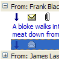
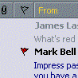
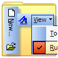
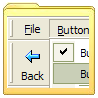
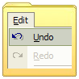
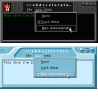
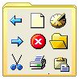
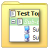
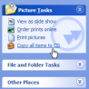

Controls Index
|  | S Grid 2Creating ListView Style Groups with SGrid 2 Owner-Draw Cells with SGrid 2.0 Last Updated: 10 February 2004 |
|  | vbAccelerator S-Grid ControlThe SGrid control is an all-VB grid which can emulate the Outlook messages list, including grouping of messages and message preview. The highly optimised display code makes this grid draw faster than FlexGrid and other VB grids even while it allows more sophisticated displays to be set up. It is also a good replacement for a ListView in report mode. Last Updated: 1 November 1999 |
|  | Command BarQuickStart - Creating an IE Toolbar vbAccelerator CommandBar Control Last Updated: 25 January 2004 |
|  | ToolbarvbAccelerator Toolbar and CoolMenu Control v3.5 vbAccelerator Office Docking Bar Control Last Updated: 5 July 2003 |
|  | MenusPopupMenu DLL - Create Unlimited Popup Menus PopupMenu - Transparent Menu Demonstration PopupMenu - Context Menu Demonstration Using Popup Menu ActiveX DLL to create SysTray Menus with Icons Using the cNewMenu DLL to Create Start Menu/ICQ Style Pop-up Menus Last Updated: 23 April 2003 |
|  | vbAccelerator NeoCaption Component v2.0This code sample provides a DLL you can use right away to radically modify the non-client area of a form, similar to the sort of customisation provided by NeoPlanet and WindowBlinds. And, since the full source code is available, you get the chance to build your customised client area derivatives. Sounds like fun? It is! Last Updated: 21 February 2002 |
|  | ImageListCustom Drag-Drop Images Using ImageLists Using the System Image List with (and without) vbAccelerator Controls vbAccelerator ImageList Control and Class v2.0 Displaying Alpha (32bit) Icons with ImageLists Last Updated: 29 March 2003 |
|  | TreeViewMultiple Selections in a TreeView Drag Drop and the vbAccelerator TreeView Control Displaying Shell Elements in a TreeView vbAccelerator TreeView Control Last Updated: 16 April 2004 |
AVI PlayerComCtl32.DLL Animation Control Class Transparent AVI Player Control Last Updated: 23 November 2003 | |
|  | vbAccelerator Explorer Bar ControlThe vbAccelerator Explorer Bar control is a new control entirely written in VB which provides a user interface like the one in Windows Explorer under XP. You can use it to create handy lists of shortcuts and informational panels, or you can incorporate controls into the panels to provide flexible and configurable complex user interface panels. The code allows you to use the inbuilt XP styles when available or to draw using an emulation otherwise. Last Updated: 15 November 2003 |